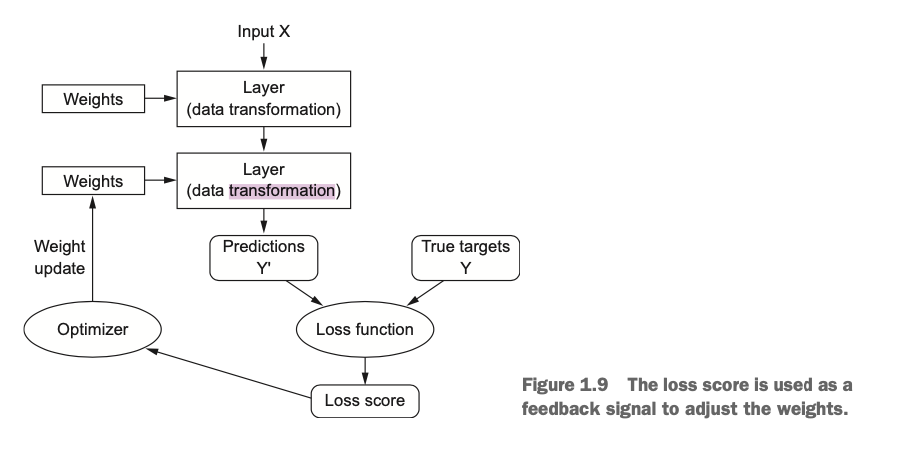

overview
机器学习和统计密切相关,但是和统计有很大的区别.
尤其是深度学习,更多的是面向工程,由经验来验证结论, 其中的数学知识是相对少的, 而不是像统计学那样有严密的数学逻辑来支撑.
实际上,机器学习是一个很简单的想法,但是能够产生解决 广泛的问题的解决方案.
what machine learning is, technically: searching for useful representa- tions of some input data, within a predefined space of possibilities, using guidance from a feedback signal. This simple idea allows for solving a remarkably broad range of intellectual tasks, from speech recognition to autonomous car driving.
机器学习即: 在一个预先定义的解空间中, 使用反馈信息作为指导, 来搜索输入数据的有意义的表示.
基本概念
损失函数 loss function / 目标函数 objective function
模型预测值和实际真实值之间的差值

optimizer
神经网络中的反馈调节算法, 根据 loss function, 对网络中的权重进行调整.
正是有了 optimizer, 网络的学习才有了可能.
[page 37]
history
概率建模 probablity modelling
使用统计学定理来进行建模
- naive bayes 算法
- logistic 回归
早期神经网络
kernel methods
核方法, 一系列分类算法, 以 SVM(support vector machine, 支持向量机) 为代表.
决策树, 随机森林, 梯度推进机
随机森林就是构造多个决策树, 这些决策树的结果相当于投票. 最终根据投票结果, 得到最终的输出.
神经网络
深度卷积网络在图像识别领域的突破 在 2010 年以后, 使神经网络再次得到重视.
deep learning 的基本理论早已成型, 随着算力,算法的提高, 深度学习作为一项工程技术, 才得到了大的发展.